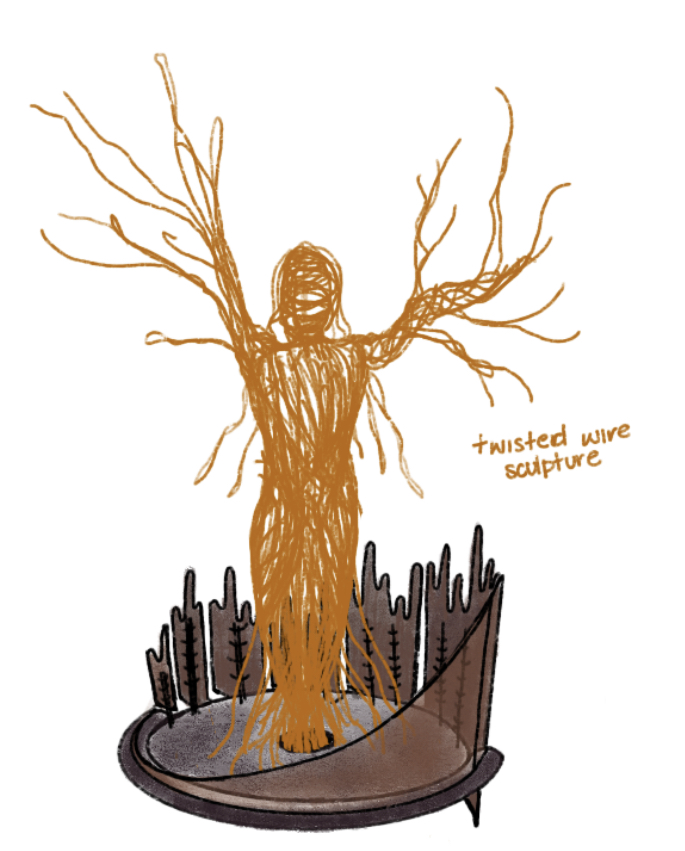
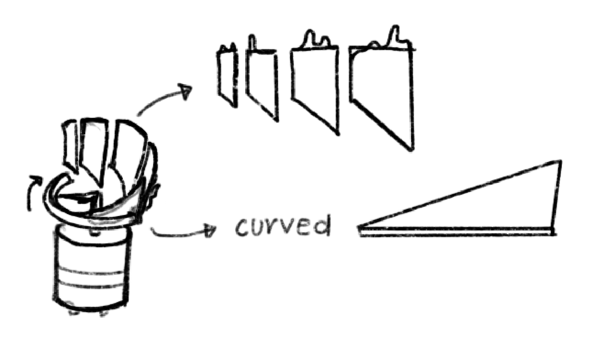
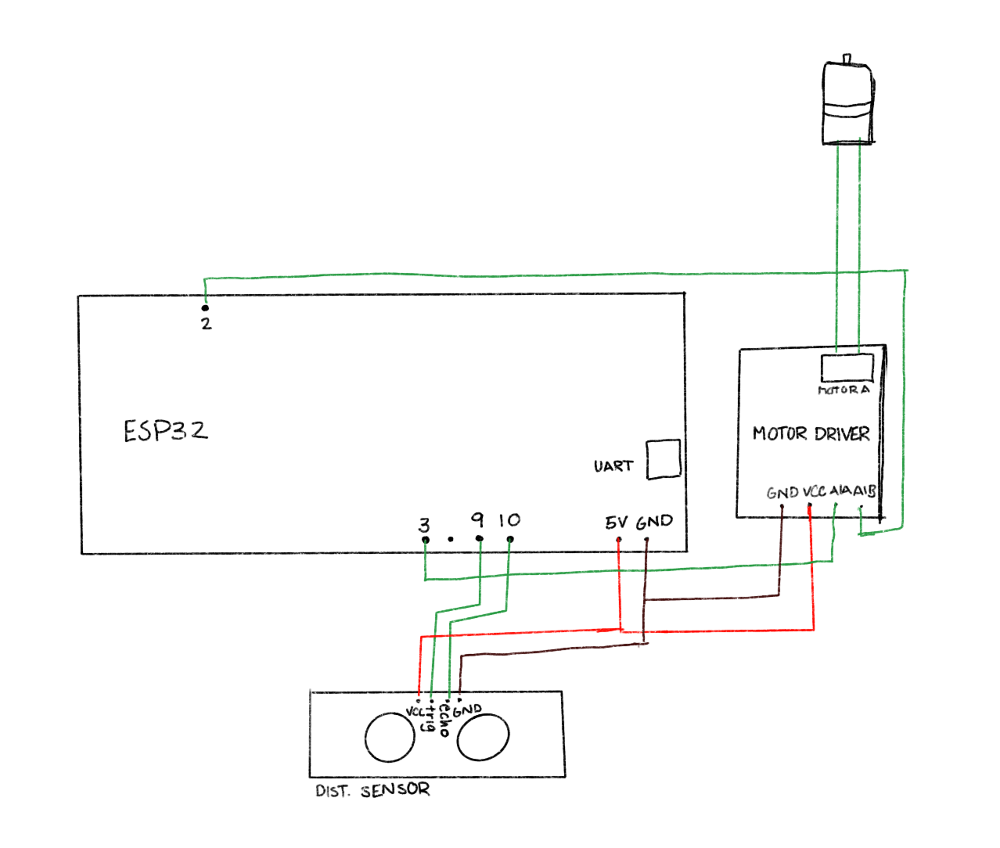

### Microcontroller Programming
## Concept & Inspirations
I chose to continue my project from last week, a figure inspired by the myth of Apollo and Daphne, who turns into a tree in front of your eyes. In addition to remaking the sculpture and mechanism, I incorporated a distance sensor so that the figure would turn into a tree when an observor approached, placing the observor in the role of Apollo.
## Design Process
Before I even got to incorporating my distance sensor, I wanted to redo the physical mechanism of the sculpture. I came up with a new design, in which a motor would spin a circular ramp, lifting a sheet of tree trunk up and covering the stationary figure inside. Although I know this won't look exactly like the figure turning into a tree, the concept of avoiding sight and touch will still be communicated.


I chose to use 3D printed parts this week, as I felt it would help me avoid the fairly haphazard appearance of last week's sculpture and also make sure everything fit together precisely.
<img class="three" src="./fusionatt.png">
<img class="three" src="./fusionbase.png">
<img class="three" src="./motoratt.jpeg">
I ended up not using the sliding component of the design, and instead just having the trunk itself spin and cover the stylized Daphne. Although the sliding piece seemed cool, it ended up being mroe trouble than it was worth, sicne the same effect could be achieved without it.
Once I had a working mechnism, I incorporated the distance sensor. The way that the ultrasonic distance sensor works is that a sound goes out of one side and the other side measures how long it takes to come back. To convert this to a distance, I used the following piece of code:
<pre><code>
long duration, distance;
digitalWrite(trigPin, LOW);
delayMicroseconds(2);
digitalWrite(trigPin, HIGH);
delayMicroseconds(60);
digitalWrite(trigPin, LOW);
duration = pulseIn(echoPin, HIGH);
distance = (duration / 2) / 29.1;
</code></pre>
Then, I wrote an if/else statement to make my sculpture close if the distance was less than a certain threshold.
<pre><code>
if (distance < distanceThreshold) {
digitalWrite(A1A, LOW);
digitalWrite(A1B, HIGH);
} else {
digitalWrite(A1A, HIGH);
digitalWrite(A1B, LOW);
}
</code></pre>
Circuit wiring:

##Final Result & Notes
The trunk "opens" when one moves away from the distance sensor:
<video width="320" height="240" controls>
<source src="distancetree.mp4" type="video/mp4">
Your browser does not support the video tag.
</video>
<video width="320" height="240" controls>
<source src="distancetree2.mp4" type="video/mp4">
Your browser does not support the video tag.
</video>
The main issue I would/will resolve is the friction between the motor attachment and the base; it makes it a little too difficult to get the trunk to "close," and it would be easily fixed if I adjusted my dimensions very slightly and reprinted. Otherwise, I'm very happy with the final result.